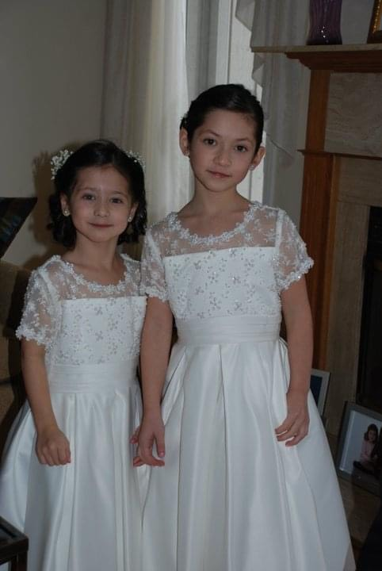

Welcome to my second page! In my free time, I enjoy a variety of hobbies that keep me engaged and connected with my loved ones. One of my favorite pastimes is playing Rummikub, a game that blends strategy and luck. I find it both entertaining and a great way to challenge my mind while honing my problem-solving skills. Whether I’m playing with friends or family, the competitive spirit and fun of Rummikub always lead to memorable moments. Spending time with my siblings is another cherished aspect of my life. We share a close bond, often engaging in friendly banter, playing games, or simply catching up. We love exploring new places, trying out different restaurants, and going on adventures together, filling our time with laughter and shared experiences. These moments not only strengthen our connection but also create lasting memories. In addition to these activities, I stay active through running and participating in group fitness classes. These pursuits not only help me maintain a healthy lifestyle but also serve as a fantastic way to relieve stress and recharge my mind. Overall, my hobbies allow me to balance my academic pursuits while nurturing relationships with those who matter most to me.
